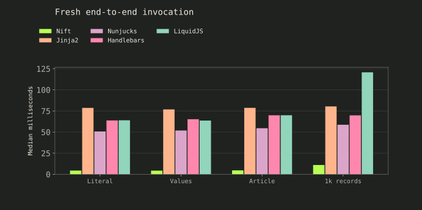
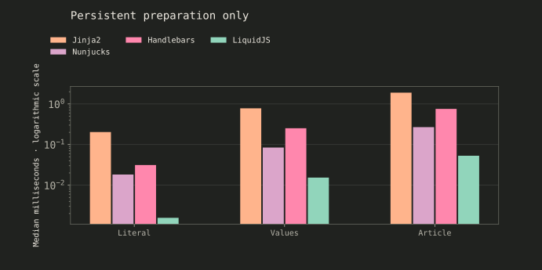
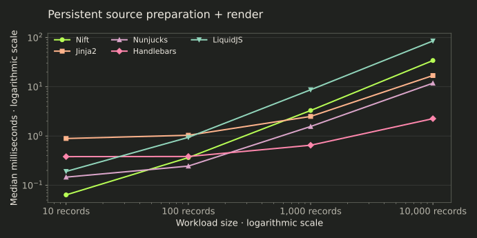
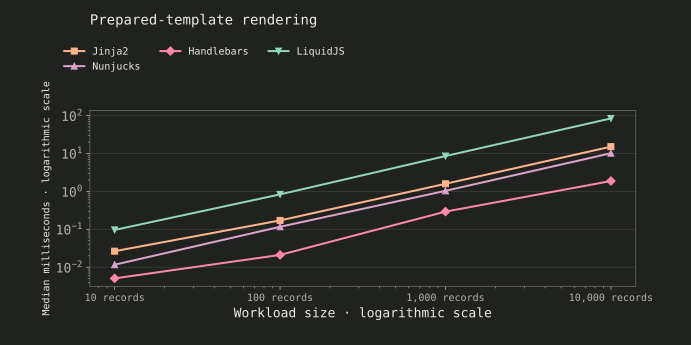
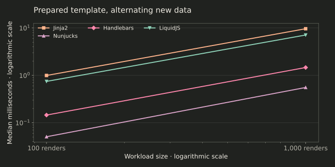
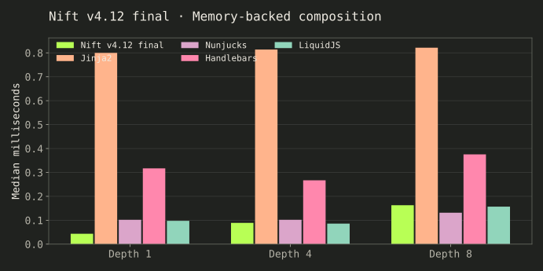
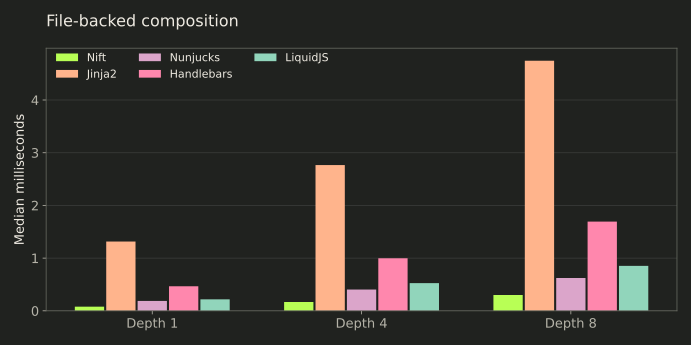
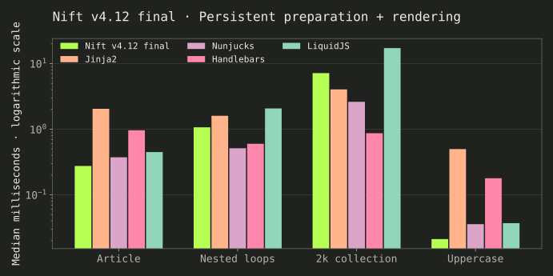
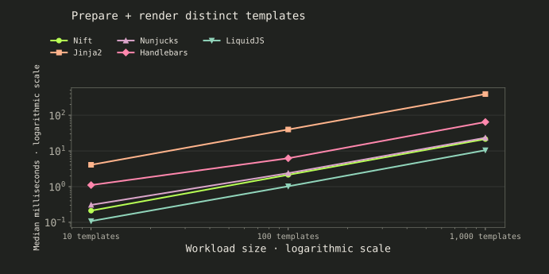
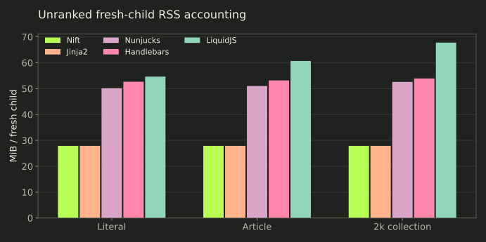

Fresh process
Start → load → render
Runtime startup, modules, source/data loading, complete rendering and stdout capture. Milliseconds per invocation.
Template engines / document assembly
Five engines assemble the same documents. What does preparation cost—and what happens when the next render arrives?
Fresh article: Nift 4.695 ms per invocation. Persistent 10,000-record render: Nift 34.085 ms, Handlebars 2.249 ms with preparation included. Low invocation cost does not establish sustained rendering throughput.
01 / the contract
Independent data and expected bytes define the task. Participant templates express the same literal text, values, branches, named records and include expansions. No tracked builds, generated sites or application servers are measured.
Fresh process
Runtime startup, modules, source/data loading, complete rendering and stdout capture. Milliseconds per invocation.
Persistent runtime
Preloaded data and sources. Timed engine calls, batched where needed. Milliseconds per template operation.
Prepared templates
Parsed/compiled artifacts reused where public APIs permit. Nift source reuse still parses; it has no exposed prepared-AST handle.
The corpus is intentionally raw text. Automatic HTML escaping, contextual safety and untrusted-template sandboxing are not certified here. A separate special-character gate verifies that template-looking values remain data.
02 / operational latency
These totals include host-language startup, both frozen data variants, all scenario templates and complete intended output. A single render still preloads an unused second variant in every adapter. This is the reproducible harness boundary, not a hand-tuned minimal request or engine-only throughput.

| Workload | Nift v4.12 final | Jinja2 | Nunjucks | Handlebars | LiquidJS |
|---|---|---|---|---|---|
| Literal | 4.426 | 78.642 | 50.702 | 63.797 | 63.970 |
| Values | 4.328 | 76.878 | 51.883 | 65.213 | 63.657 |
| Article | 4.695 | 78.686 | 54.578 | 69.893 | 69.959 |
| 1k records | 11.024 | 80.401 | 58.704 | 69.804 | 120.795 |
03 / preparation
Jinja produces code, Nunjucks eager-compiles, Handlebars precompiles JavaScript source and LiquidJS parses tokens. These preparation artifacts differ. Nift exposes no standalone preparation API; its column is unavailable.

| Workload | Nift v4.12 final | Jinja2 | Nunjucks | Handlebars | LiquidJS |
|---|---|---|---|---|---|
| Literal | — | 0.203 | 0.018 | 0.031 | 0.002 |
| Values | — | 0.781 | 0.084 | 0.252 | 0.015 |
| Article | — | 1.894 | 0.269 | 0.755 | 0.053 |
04 / records and output
In the full final official matrix, Nift is still 15.16× behind Handlebars on this source-render contract (34.085 versus 2.249 ms). Main source preparation plus rendering is timed on every operation. Nift uses its native render_text call. Preloaded contexts and output validation remain outside the timer.

| Workload | Nift v4.12 final | Jinja2 | Nunjucks | Handlebars | LiquidJS |
|---|---|---|---|---|---|
| 10 records | 0.064 | 0.889 | 0.146 | 0.381 | 0.191 |
| 100 records | 0.364 | 1.035 | 0.245 | 0.383 | 0.938 |
| 1,000 records | 3.293 | 2.494 | 1.560 | 0.649 | 8.677 |
| 10,000 records | 34.085 | 16.886 | 11.820 | 2.249 | 85.047 |
05 / prepared reuse
These four engines reuse prepared templates with preloaded data. Nift is absent because it does not expose the same capability. Keeping a Nift Engine alive avoids process startup, but does not turn source reuse into parsed-template reuse.

| Workload | Nift v4.12 final | Jinja2 | Nunjucks | Handlebars | LiquidJS |
|---|---|---|---|---|---|
| 10 records | — | 0.027 | 0.012 | 0.005 | 0.096 |
| 100 records | — | 0.172 | 0.117 | 0.021 | 0.836 |
| 1,000 records | — | 1.593 | 1.038 | 0.294 | 8.584 |
| 10,000 records | — | 15.194 | 10.200 | 1.884 | 84.503 |

| Workload | Nift v4.12 final | Jinja2 | Nunjucks | Handlebars | LiquidJS |
|---|---|---|---|---|---|
| 100 renders | — | 1.028 | 0.059 | 0.176 | 0.775 |
| 1,000 renders | — | 10.298 | 0.638 | 1.703 | 7.691 |
06 / partials
Memory-backed sources use normal warmed partial caches where available, while main preparation repeats. File-backed calls load from files with engine source/partial caches invalidated or disabled. OS caches stay warm. Nift includes its supported root-reset cost.

| Workload | Nift v4.12 final | Jinja2 | Nunjucks | Handlebars | LiquidJS |
|---|---|---|---|---|---|
| Depth 1 | 0.043 | 0.800 | 0.102 | 0.317 | 0.097 |
| Depth 4 | 0.089 | 0.814 | 0.102 | 0.267 | 0.086 |
| Depth 8 | 0.163 | 0.822 | 0.131 | 0.375 | 0.157 |

| Workload | Nift v4.12 final | Jinja2 | Nunjucks | Handlebars | LiquidJS |
|---|---|---|---|---|---|
| Depth 1 | 0.078 | 1.315 | 0.187 | 0.466 | 0.218 |
| Depth 4 | 0.168 | 2.766 | 0.403 | 0.997 | 0.526 |
| Depth 8 | 0.300 | 4.746 | 0.622 | 1.692 | 0.852 |
07 / realistic assembly
The article combines metadata, navigation, sections, conditional output and a footer. Nested loops and a 2,000-record collection exercise lookup and output growth. Uppercase is the same ASCII transformation in every engine.

| Workload | Nift v4.12 final | Jinja2 | Nunjucks | Handlebars | LiquidJS |
|---|---|---|---|---|---|
| Article | 0.275 | 2.046 | 0.373 | 0.963 | 0.448 |
| Nested loops | 1.068 | 1.600 | 0.512 | 0.599 | 2.073 |
| 2k collection | 7.149 | 4.042 | 2.615 | 0.867 | 17.205 |
| Uppercase | 0.021 | 0.498 | 0.036 | 0.179 | 0.037 |
08 / source diversity
Unique main sources carry distinct output suffixes. Every source is prepared and rendered; this is not a cache-hit claim. Values below are complete workload totals rather than amortized individual template times.

| Workload | Nift v4.12 final | Jinja2 | Nunjucks | Handlebars | LiquidJS |
|---|---|---|---|---|---|
| 10 templates | 0.212 | 4.086 | 0.308 | 1.105 | 0.108 |
| 100 templates | 2.142 | 39.918 | 2.380 | 6.235 | 1.023 |
| 1,000 templates | 21.516 | 392.408 | 23.372 | 64.676 | 10.465 |
09 / resource scope
These are unranked raw accounting observations, not memory-efficiency rankings. The final noop-child control rose from 16.75 to 80.75 MiB when its launch parent allocated 64 MiB: inherited wait4 floors can dominate fresh and whole-worker peaks. No constant is subtracted. Persistent-worker lifetime also includes preload, preparation, retained batch outputs and validation; it is not memory per render. Scopes remain separate.

| Workload | Nift v4.12 final | Jinja2 | Nunjucks | Handlebars | LiquidJS |
|---|---|---|---|---|---|
| Literal | 27.875 | 27.875 | 50.125 | 52.633 | 54.625 |
| Article | 27.875 | 27.875 | 51.000 | 53.141 | 60.652 |
| 2k collection | 27.875 | 27.875 | 52.562 | 53.902 | 67.766 |
| Workload | Engine | Operation | Peak MiB |
|---|---|---|---|
| literal | Nift v4.12 final | source-reuse | 27.875 |
| literal | Jinja2 | render | 27.875 |
| literal | Nunjucks | render | 59.504 |
| literal | Handlebars | render | 85.199 |
| literal | LiquidJS | render | 69.184 |
| literal | Jinja2 | reuse | 27.875 |
| literal | Nunjucks | reuse | 71.754 |
| literal | Handlebars | reuse | 65.172 |
| literal | LiquidJS | reuse | 68.129 |
| literal | Jinja2 | parse | 27.875 |
| literal | Nunjucks | parse | 63.391 |
| literal | Handlebars | parse | 66.246 |
| literal | LiquidJS | parse | 67.113 |
| article | Nift v4.12 final | source-reuse | 27.875 |
| article | Jinja2 | render | 27.875 |
| article | Nunjucks | render | 73.113 |
| article | Handlebars | render | 81.598 |
| article | LiquidJS | render | 82.656 |
| article | Jinja2 | reuse | 27.875 |
| article | Nunjucks | reuse | 94.820 |
| article | Handlebars | reuse | 94.762 |
| article | LiquidJS | reuse | 82.438 |
| article | Jinja2 | parse | 27.875 |
| article | Nunjucks | parse | 63.020 |
| article | Handlebars | parse | 67.078 |
| article | LiquidJS | parse | 69.355 |
| collection | Nift v4.12 final | source-reuse | 27.875 |
| collection | Jinja2 | render | 27.875 |
| collection | Nunjucks | render | 94.496 |
| collection | Handlebars | render | 98.910 |
| collection | LiquidJS | render | 103.289 |
| collection | Jinja2 | reuse | 27.875 |
| collection | Nunjucks | reuse | 90.516 |
| collection | Handlebars | reuse | 152.941 |
| collection | LiquidJS | reuse | 103.789 |
| collection | Jinja2 | parse | 27.875 |
| collection | Nunjucks | parse | 63.297 |
| collection | Handlebars | parse | 66.047 |
| collection | LiquidJS | parse | 70.125 |
10 / independent gates
Cloud certification passed all 393 supported cells, including a separate raw-special-value fixture. Every timed render is compared against independent expected bytes. Fresh output hashes are retained; persistent workers check every batch output before emitting their timing row. Ordering, record counts, includes and changing-data variants follow the exact output contract.
The independent audit checks all 375 official cells, the complete sample index set, 17,950 measured observations, 750 separate warmups and every frozen corpus hash. No statistical outliers were removed. Thirty extra special-value/malformed/variant gates passed. Final certification and all accepted observations passed; preparation failures are retained separately in evidence.
| Workload | Engine | Mode | Median | p95 | Min | Max | Samples |
|---|---|---|---|---|---|---|---|
| literal | Nift v4.12 final | fresh | 4.4261 | 5.6212 | 3.6464 | 9.0663 | 50 |
| literal | Nift v4.12 final | source-reuse | 0.0152 | 0.0286 | 0.0146 | 0.0298 | 50 |
| literal | Jinja2 | fresh | 78.6419 | 85.0563 | 73.3372 | 100.9441 | 50 |
| literal | Jinja2 | render | 0.2390 | 0.3255 | 0.2163 | 0.4039 | 50 |
| literal | Jinja2 | reuse | 0.0090 | 0.0160 | 0.0087 | 0.0198 | 50 |
| literal | Jinja2 | parse | 0.2033 | 0.3897 | 0.1877 | 0.9995 | 50 |
| literal | Nunjucks | fresh | 50.7022 | 60.1301 | 47.4936 | 61.7883 | 50 |
| literal | Nunjucks | render | 0.0227 | 0.1042 | 0.0140 | 0.1274 | 50 |
| literal | Nunjucks | reuse | 0.0005 | 0.0015 | 0.0004 | 0.0017 | 50 |
| literal | Nunjucks | parse | 0.0183 | 0.0798 | 0.0109 | 0.1263 | 50 |
| literal | Handlebars | fresh | 63.7970 | 72.5479 | 60.2171 | 77.9489 | 50 |
| literal | Handlebars | render | 0.0437 | 0.2081 | 0.0189 | 0.2860 | 50 |
| literal | Handlebars | reuse | 0.0014 | 0.0084 | 0.0013 | 0.0116 | 50 |
| literal | Handlebars | parse | 0.0313 | 0.1095 | 0.0115 | 0.1744 | 50 |
| literal | LiquidJS | fresh | 63.9702 | 77.2523 | 60.7756 | 80.5271 | 50 |
| literal | LiquidJS | render | 0.0036 | 0.0219 | 0.0022 | 0.0265 | 50 |
| literal | LiquidJS | reuse | 0.0010 | 0.0118 | 0.0009 | 0.0252 | 50 |
| literal | LiquidJS | parse | 0.0016 | 0.0058 | 0.0013 | 0.0212 | 50 |
| interpolation | Nift v4.12 final | fresh | 4.3276 | 5.6980 | 3.6496 | 8.9494 | 50 |
| interpolation | Nift v4.12 final | source-reuse | 0.0280 | 0.0436 | 0.0271 | 0.0545 | 50 |
| interpolation | Jinja2 | fresh | 76.8781 | 86.7747 | 73.8807 | 94.0831 | 50 |
| interpolation | Jinja2 | render | 0.6766 | 1.0704 | 0.6323 | 1.3550 | 50 |
| interpolation | Jinja2 | reuse | 0.0120 | 0.0241 | 0.0117 | 0.0480 | 50 |
| interpolation | Jinja2 | parse | 0.7808 | 1.7127 | 0.6073 | 2.4405 | 50 |
| interpolation | Nunjucks | fresh | 51.8829 | 58.7476 | 49.1177 | 62.1285 | 50 |
| interpolation | Nunjucks | render | 0.0712 | 0.1792 | 0.0476 | 0.3035 | 50 |
| interpolation | Nunjucks | reuse | 0.0007 | 0.0030 | 0.0006 | 0.0090 | 50 |
| interpolation | Nunjucks | parse | 0.0844 | 0.2407 | 0.0470 | 0.2964 | 50 |
| interpolation | Handlebars | fresh | 65.2132 | 78.2362 | 62.0791 | 81.6657 | 50 |
| interpolation | Handlebars | render | 0.2692 | 0.5914 | 0.1379 | 0.7077 | 50 |
| interpolation | Handlebars | reuse | 0.0033 | 0.0247 | 0.0016 | 0.0288 | 50 |
| interpolation | Handlebars | parse | 0.2519 | 0.6989 | 0.1369 | 1.4230 | 50 |
| interpolation | LiquidJS | fresh | 63.6574 | 71.2344 | 60.9407 | 86.4300 | 50 |
| interpolation | LiquidJS | render | 0.0372 | 0.1618 | 0.0242 | 0.2351 | 50 |
| interpolation | LiquidJS | reuse | 0.0138 | 0.0613 | 0.0110 | 0.0952 | 50 |
| interpolation | LiquidJS | parse | 0.0153 | 0.0946 | 0.0105 | 0.1078 | 50 |
| condition | Nift v4.12 final | fresh | 4.1892 | 4.8143 | 3.7012 | 5.3136 | 50 |
| condition | Nift v4.12 final | source-reuse | 0.0229 | 0.0390 | 0.0213 | 0.0515 | 50 |
| condition | Jinja2 | fresh | 77.8444 | 88.0658 | 73.0504 | 90.9726 | 50 |
| condition | Jinja2 | render | 0.5321 | 0.7621 | 0.4945 | 1.0677 | 50 |
| condition | Jinja2 | reuse | 0.0098 | 0.0169 | 0.0094 | 0.0263 | 50 |
| condition | Jinja2 | parse | 0.4801 | 0.8312 | 0.4604 | 1.1934 | 50 |
| condition | Nunjucks | fresh | 51.0503 | 56.4302 | 47.9723 | 58.0936 | 50 |
| condition | Nunjucks | render | 0.0569 | 0.1990 | 0.0371 | 0.5495 | 50 |
| condition | Nunjucks | reuse | 0.0005 | 0.0019 | 0.0004 | 0.0042 | 50 |
| condition | Nunjucks | parse | 0.0467 | 0.2082 | 0.0371 | 0.3145 | 50 |
| condition | Handlebars | fresh | 66.1081 | 72.5365 | 62.6521 | 75.7466 | 50 |
| condition | Handlebars | render | 0.3229 | 0.7497 | 0.1489 | 1.0832 | 50 |
| condition | Handlebars | reuse | 0.0024 | 0.0151 | 0.0016 | 0.0338 | 50 |
| condition | Handlebars | parse | 0.2060 | 0.5296 | 0.1273 | 0.6510 | 50 |
| condition | LiquidJS | fresh | 63.9807 | 69.8989 | 61.7739 | 74.1567 | 50 |
| condition | LiquidJS | render | 0.0397 | 0.1554 | 0.0203 | 0.2685 | 50 |
| condition | LiquidJS | reuse | 0.0095 | 0.0474 | 0.0047 | 0.0701 | 50 |
| condition | LiquidJS | parse | 0.0099 | 0.0722 | 0.0072 | 0.0802 | 50 |
| nested-object | Nift v4.12 final | fresh | 4.1875 | 4.7946 | 3.6676 | 8.5395 | 50 |
| nested-object | Nift v4.12 final | source-reuse | 0.0229 | 0.0330 | 0.0221 | 0.0340 | 50 |
| nested-object | Jinja2 | fresh | 76.9953 | 83.1994 | 72.8081 | 88.0045 | 50 |
| nested-object | Jinja2 | render | 0.5582 | 0.6347 | 0.5261 | 0.7449 | 50 |
| nested-object | Jinja2 | reuse | 0.0113 | 0.0218 | 0.0107 | 0.0293 | 50 |
| nested-object | Jinja2 | parse | 0.4989 | 0.7886 | 0.4760 | 2.1077 | 50 |
| nested-object | Nunjucks | fresh | 51.1950 | 58.1469 | 47.7610 | 63.5917 | 50 |
| nested-object | Nunjucks | render | 0.0524 | 0.2149 | 0.0386 | 0.5389 | 50 |
| nested-object | Nunjucks | reuse | 0.0006 | 0.0094 | 0.0005 | 0.0164 | 50 |
| nested-object | Nunjucks | parse | 0.0442 | 0.2568 | 0.0350 | 0.3042 | 50 |
| nested-object | Handlebars | fresh | 65.1363 | 78.2033 | 61.7493 | 81.0628 | 50 |
| nested-object | Handlebars | render | 0.1932 | 0.5483 | 0.1082 | 0.7188 | 50 |
| nested-object | Handlebars | reuse | 0.0019 | 0.0064 | 0.0014 | 0.0171 | 50 |
| nested-object | Handlebars | parse | 0.1586 | 0.4076 | 0.0948 | 1.0385 | 50 |
| nested-object | LiquidJS | fresh | 63.9874 | 68.4241 | 60.3253 | 72.1575 | 50 |
| nested-object | LiquidJS | render | 0.0445 | 0.1589 | 0.0188 | 0.1791 | 50 |
| nested-object | LiquidJS | reuse | 0.0108 | 0.0351 | 0.0077 | 0.0674 | 50 |
| nested-object | LiquidJS | parse | 0.0098 | 0.0862 | 0.0065 | 0.1645 | 50 |
| loop-10 | Nift v4.12 final | fresh | 4.4065 | 6.0660 | 3.7697 | 7.8079 | 50 |
| loop-10 | Nift v4.12 final | source-reuse | 0.0637 | 0.1321 | 0.0606 | 0.2026 | 50 |
| loop-10 | Jinja2 | fresh | 77.4983 | 105.2507 | 73.9972 | 116.9527 | 50 |
| loop-10 | Jinja2 | render | 0.8888 | 1.0565 | 0.8421 | 1.3105 | 50 |
| loop-10 | Jinja2 | reuse | 0.0265 | 0.0475 | 0.0259 | 0.0579 | 50 |
| loop-10 | Jinja2 | parse | 0.8160 | 1.7805 | 0.7841 | 2.5044 | 50 |
| loop-10 | Nunjucks | fresh | 52.6948 | 60.5095 | 50.7471 | 67.6170 | 50 |
| loop-10 | Nunjucks | render | 0.1461 | 0.3823 | 0.0850 | 0.6140 | 50 |
| loop-10 | Nunjucks | reuse | 0.0117 | 0.0210 | 0.0102 | 0.0264 | 50 |
| loop-10 | Nunjucks | parse | 0.1018 | 0.3503 | 0.0775 | 0.5189 | 50 |
| loop-10 | Handlebars | fresh | 67.3288 | 84.6068 | 63.8084 | 108.4824 | 50 |
| loop-10 | Handlebars | render | 0.3809 | 0.9908 | 0.1969 | 1.2816 | 50 |
| loop-10 | Handlebars | reuse | 0.0051 | 0.0313 | 0.0029 | 0.0910 | 50 |
| loop-10 | Handlebars | parse | 0.2728 | 0.7089 | 0.1837 | 0.9146 | 50 |
| loop-10 | LiquidJS | fresh | 65.7343 | 84.3587 | 63.1271 | 90.1482 | 50 |
| loop-10 | LiquidJS | render | 0.1907 | 0.7412 | 0.1123 | 1.0468 | 50 |
| loop-10 | LiquidJS | reuse | 0.0965 | 0.1975 | 0.0868 | 0.5068 | 50 |
| loop-10 | LiquidJS | parse | 0.0164 | 0.1165 | 0.0128 | 0.1649 | 50 |
| loop-100 | Nift v4.12 final | fresh | 4.8396 | 5.3569 | 4.3307 | 5.8283 | 50 |
| loop-100 | Nift v4.12 final | source-reuse | 0.3643 | 0.6632 | 0.3543 | 1.1559 | 50 |
| loop-100 | Jinja2 | fresh | 77.1476 | 84.2377 | 73.3244 | 91.3559 | 50 |
| loop-100 | Jinja2 | render | 1.0348 | 1.1685 | 0.9927 | 1.4267 | 50 |
| loop-100 | Jinja2 | reuse | 0.1718 | 0.2041 | 0.1669 | 0.3858 | 50 |
| loop-100 | Jinja2 | parse | 0.8295 | 1.7697 | 0.7859 | 2.3293 | 50 |
| loop-100 | Nunjucks | fresh | 53.6097 | 58.6037 | 51.1621 | 62.7372 | 50 |
| loop-100 | Nunjucks | render | 0.2449 | 0.9213 | 0.1829 | 1.2520 | 50 |
| loop-100 | Nunjucks | reuse | 0.1168 | 0.1795 | 0.0985 | 0.3540 | 50 |
| loop-100 | Nunjucks | parse | 0.1150 | 0.3636 | 0.0817 | 0.4534 | 50 |
| loop-100 | Handlebars | fresh | 66.9474 | 72.4665 | 64.4685 | 86.9737 | 50 |
| loop-100 | Handlebars | render | 0.3834 | 0.9395 | 0.2241 | 1.5553 | 50 |
| loop-100 | Handlebars | reuse | 0.0211 | 0.0689 | 0.0140 | 0.2634 | 50 |
| loop-100 | Handlebars | parse | 0.2949 | 0.7853 | 0.1823 | 1.1169 | 50 |
| loop-100 | LiquidJS | fresh | 74.4833 | 82.8043 | 69.9790 | 85.5465 | 50 |
| loop-100 | LiquidJS | render | 0.9377 | 1.9441 | 0.8237 | 2.8882 | 50 |
| loop-100 | LiquidJS | reuse | 0.8363 | 1.2428 | 0.7764 | 2.2382 | 50 |
| loop-100 | LiquidJS | parse | 0.0175 | 0.1352 | 0.0130 | 0.2082 | 50 |
| loop-1000 | Nift v4.12 final | fresh | 11.0243 | 12.4321 | 10.5550 | 13.8082 | 30 |
| loop-1000 | Nift v4.12 final | source-reuse | 3.2934 | 3.6550 | 3.2192 | 7.2242 | 50 |
| loop-1000 | Jinja2 | fresh | 80.4006 | 89.9420 | 76.5213 | 94.6888 | 30 |
| loop-1000 | Jinja2 | render | 2.4941 | 2.9182 | 2.4119 | 3.1289 | 50 |
| loop-1000 | Jinja2 | reuse | 1.5927 | 2.7383 | 1.5417 | 3.0826 | 50 |
| loop-1000 | Jinja2 | parse | 0.8104 | 1.6755 | 0.7728 | 1.8544 | 50 |
| loop-1000 | Nunjucks | fresh | 58.7043 | 64.9430 | 55.6729 | 70.4583 | 30 |
| loop-1000 | Nunjucks | render | 1.5602 | 2.8825 | 1.1271 | 4.7745 | 50 |
| loop-1000 | Nunjucks | reuse | 1.0381 | 1.8836 | 0.9505 | 2.4397 | 50 |
| loop-1000 | Nunjucks | parse | 0.0980 | 0.4565 | 0.0781 | 0.4839 | 50 |
| loop-1000 | Handlebars | fresh | 69.8036 | 76.8036 | 66.9621 | 78.9887 | 30 |
| loop-1000 | Handlebars | render | 0.6493 | 1.4998 | 0.3717 | 3.5819 | 50 |
| loop-1000 | Handlebars | reuse | 0.2937 | 0.5694 | 0.1293 | 0.9390 | 50 |
| loop-1000 | Handlebars | parse | 0.3177 | 1.8361 | 0.2086 | 1.9618 | 50 |
| loop-1000 | LiquidJS | fresh | 120.7950 | 133.3768 | 116.0802 | 138.0007 | 30 |
| loop-1000 | LiquidJS | render | 8.6769 | 14.3764 | 7.7187 | 16.6323 | 50 |
| loop-1000 | LiquidJS | reuse | 8.5839 | 16.4251 | 7.7400 | 25.9177 | 50 |
| loop-1000 | LiquidJS | parse | 0.0178 | 0.1260 | 0.0130 | 0.1532 | 50 |
| loop-10000 | Nift v4.12 final | fresh | 76.7503 | 84.0528 | 71.4375 | 84.6973 | 30 |
| loop-10000 | Nift v4.12 final | source-reuse | 34.0847 | 37.8297 | 33.2001 | 69.5894 | 50 |
| loop-10000 | Jinja2 | fresh | 113.5029 | 122.7730 | 106.7649 | 124.6484 | 30 |
| loop-10000 | Jinja2 | render | 16.8858 | 18.7210 | 16.2922 | 21.8873 | 50 |
| loop-10000 | Jinja2 | reuse | 15.1943 | 16.0843 | 15.0442 | 24.6687 | 50 |
| loop-10000 | Jinja2 | parse | 0.8217 | 1.8227 | 0.7883 | 3.0012 | 50 |
| loop-10000 | Nunjucks | fresh | 98.8274 | 109.0909 | 93.4323 | 115.3841 | 30 |
| loop-10000 | Nunjucks | render | 11.8195 | 17.7200 | 10.0070 | 27.0111 | 50 |
| loop-10000 | Nunjucks | reuse | 10.2000 | 13.7770 | 9.1717 | 21.6150 | 50 |
| loop-10000 | Nunjucks | parse | 0.1124 | 0.3668 | 0.0738 | 0.5397 | 50 |
| loop-10000 | Handlebars | fresh | 99.3733 | 109.8616 | 93.0798 | 112.2132 | 30 |
| loop-10000 | Handlebars | render | 2.2486 | 5.3166 | 2.1086 | 8.4113 | 50 |
| loop-10000 | Handlebars | reuse | 1.8837 | 4.2244 | 1.6953 | 7.1547 | 50 |
| loop-10000 | Handlebars | parse | 0.2578 | 0.7967 | 0.1837 | 0.9490 | 50 |
| loop-10000 | LiquidJS | fresh | 240.1026 | 260.8873 | 227.0205 | 262.9817 | 30 |
| loop-10000 | LiquidJS | render | 85.0467 | 97.7849 | 81.6179 | 110.6598 | 50 |
| loop-10000 | LiquidJS | reuse | 84.5030 | 97.5672 | 81.7115 | 103.0087 | 50 |
| loop-10000 | LiquidJS | parse | 0.0202 | 0.1674 | 0.0141 | 0.1963 | 50 |
| nested-loops | Nift v4.12 final | fresh | 6.0909 | 7.1461 | 5.4670 | 7.9292 | 50 |
| nested-loops | Nift v4.12 final | source-reuse | 1.0676 | 1.7010 | 1.0376 | 2.9206 | 50 |
| nested-loops | Jinja2 | fresh | 77.2261 | 85.1275 | 73.9228 | 95.4614 | 50 |
| nested-loops | Jinja2 | render | 1.6002 | 1.7590 | 1.5489 | 2.3589 | 50 |
| nested-loops | Jinja2 | reuse | 0.3447 | 0.4343 | 0.3364 | 0.7418 | 50 |
| nested-loops | Jinja2 | parse | 1.2087 | 1.9913 | 1.1555 | 2.3859 | 50 |
| nested-loops | Nunjucks | fresh | 53.6076 | 55.8791 | 51.3149 | 62.6151 | 50 |
| nested-loops | Nunjucks | render | 0.5115 | 1.3899 | 0.3448 | 2.3594 | 50 |
| nested-loops | Nunjucks | reuse | 0.2479 | 0.3373 | 0.2061 | 0.3941 | 50 |
| nested-loops | Nunjucks | parse | 0.1769 | 0.6521 | 0.1262 | 1.2929 | 50 |
| nested-loops | Handlebars | fresh | 67.7136 | 73.2727 | 64.8081 | 74.2442 | 50 |
| nested-loops | Handlebars | render | 0.5988 | 1.6230 | 0.3311 | 3.3512 | 50 |
| nested-loops | Handlebars | reuse | 0.0583 | 0.1159 | 0.0374 | 0.2571 | 50 |
| nested-loops | Handlebars | parse | 0.4171 | 0.9623 | 0.2792 | 1.7729 | 50 |
| nested-loops | LiquidJS | fresh | 78.5052 | 87.4217 | 75.1915 | 90.6321 | 50 |
| nested-loops | LiquidJS | render | 2.0726 | 3.5077 | 1.7807 | 4.1771 | 50 |
| nested-loops | LiquidJS | reuse | 1.8678 | 2.8290 | 1.6837 | 5.0831 | 50 |
| nested-loops | LiquidJS | parse | 0.0269 | 0.1572 | 0.0212 | 0.2005 | 50 |
| includes-1 | Nift v4.12 final | fresh | 4.3987 | 4.7569 | 3.7388 | 5.4986 | 50 |
| includes-1 | Nift v4.12 final | source-reuse | 0.0434 | 0.0826 | 0.0411 | 0.0934 | 50 |
| includes-1 | Nift v4.12 final | files | 0.0781 | 0.1173 | 0.0758 | 0.1233 | 50 |
| includes-1 | Jinja2 | fresh | 77.1416 | 86.7477 | 74.2007 | 100.4816 | 50 |
| includes-1 | Jinja2 | render | 0.7999 | 1.1783 | 0.7559 | 1.5032 | 50 |
| includes-1 | Jinja2 | reuse | 0.0164 | 0.0350 | 0.0161 | 0.0513 | 50 |
| includes-1 | Jinja2 | parse | 0.7347 | 1.3711 | 0.6935 | 1.4904 | 50 |
| includes-1 | Jinja2 | files | 1.3153 | 1.5385 | 1.2518 | 1.6506 | 50 |
| includes-1 | Nunjucks | fresh | 52.8592 | 63.2610 | 51.0474 | 71.1261 | 50 |
| includes-1 | Nunjucks | render | 0.1019 | 0.3546 | 0.0610 | 0.5805 | 50 |
| includes-1 | Nunjucks | reuse | 0.0021 | 0.0327 | 0.0019 | 0.0405 | 50 |
| includes-1 | Nunjucks | parse | 0.0767 | 0.3610 | 0.0576 | 0.6221 | 50 |
| includes-1 | Nunjucks | files | 0.1871 | 0.5383 | 0.1214 | 0.8829 | 50 |
| includes-1 | Handlebars | fresh | 66.7962 | 71.7125 | 64.0374 | 77.0327 | 50 |
| includes-1 | Handlebars | render | 0.3170 | 0.8359 | 0.1578 | 1.0441 | 50 |
| includes-1 | Handlebars | reuse | 0.0030 | 0.0207 | 0.0018 | 0.0466 | 50 |
| includes-1 | Handlebars | parse | 0.2341 | 0.5615 | 0.1476 | 0.8923 | 50 |
| includes-1 | Handlebars | files | 0.4661 | 1.0953 | 0.2755 | 1.4993 | 50 |
| includes-1 | LiquidJS | fresh | 65.2035 | 73.1481 | 62.8935 | 76.9329 | 50 |
| includes-1 | LiquidJS | render | 0.0974 | 0.3522 | 0.0416 | 0.4198 | 50 |
| includes-1 | LiquidJS | reuse | 0.0245 | 0.0746 | 0.0181 | 0.1521 | 50 |
| includes-1 | LiquidJS | parse | 0.0155 | 0.0862 | 0.0114 | 0.1186 | 50 |
| includes-1 | LiquidJS | files | 0.2184 | 0.5916 | 0.1316 | 0.8224 | 50 |
| includes-4 | Nift v4.12 final | fresh | 4.4392 | 5.1673 | 3.8126 | 5.3932 | 50 |
| includes-4 | Nift v4.12 final | source-reuse | 0.0890 | 0.1890 | 0.0857 | 0.3005 | 50 |
| includes-4 | Nift v4.12 final | files | 0.1678 | 0.2377 | 0.1616 | 0.2467 | 50 |
| includes-4 | Jinja2 | fresh | 78.4327 | 85.4734 | 74.4581 | 88.9807 | 50 |
| includes-4 | Jinja2 | render | 0.8139 | 1.0179 | 0.7734 | 1.0637 | 50 |
| includes-4 | Jinja2 | reuse | 0.0307 | 0.0502 | 0.0297 | 0.0845 | 50 |
| includes-4 | Jinja2 | parse | 0.8988 | 1.8381 | 0.6971 | 2.9960 | 50 |
| includes-4 | Jinja2 | files | 2.7660 | 3.2677 | 2.6420 | 4.3760 | 50 |
| includes-4 | Nunjucks | fresh | 54.1569 | 63.1533 | 51.9838 | 67.1992 | 50 |
| includes-4 | Nunjucks | render | 0.1019 | 0.4834 | 0.0669 | 0.6503 | 50 |
| includes-4 | Nunjucks | reuse | 0.0088 | 0.0401 | 0.0062 | 0.0748 | 50 |
| includes-4 | Nunjucks | parse | 0.1114 | 0.3572 | 0.0652 | 0.4456 | 50 |
| includes-4 | Nunjucks | files | 0.4034 | 1.1382 | 0.2250 | 1.6808 | 50 |
| includes-4 | Handlebars | fresh | 67.7791 | 75.5850 | 64.6565 | 80.9506 | 50 |
| includes-4 | Handlebars | render | 0.2671 | 0.8209 | 0.1548 | 1.0699 | 50 |
| includes-4 | Handlebars | reuse | 0.0037 | 0.0331 | 0.0024 | 0.0391 | 50 |
| includes-4 | Handlebars | parse | 0.2807 | 1.0162 | 0.1667 | 1.5083 | 50 |
| includes-4 | Handlebars | files | 0.9969 | 2.3695 | 0.4996 | 2.6027 | 50 |
| includes-4 | LiquidJS | fresh | 65.4844 | 74.7830 | 63.1063 | 78.7590 | 50 |
| includes-4 | LiquidJS | render | 0.0859 | 0.3575 | 0.0451 | 0.5023 | 50 |
| includes-4 | LiquidJS | reuse | 0.0321 | 0.1346 | 0.0246 | 0.1408 | 50 |
| includes-4 | LiquidJS | parse | 0.0189 | 0.0852 | 0.0122 | 0.1372 | 50 |
| includes-4 | LiquidJS | files | 0.5256 | 1.4685 | 0.3030 | 1.6216 | 50 |
| includes-8 | Nift v4.12 final | fresh | 4.8741 | 5.5560 | 4.1811 | 7.3288 | 50 |
| includes-8 | Nift v4.12 final | source-reuse | 0.1629 | 0.2382 | 0.1580 | 0.2776 | 50 |
| includes-8 | Nift v4.12 final | files | 0.3004 | 0.4662 | 0.2882 | 0.6218 | 50 |
| includes-8 | Jinja2 | fresh | 83.4359 | 96.1542 | 78.0738 | 108.7327 | 50 |
| includes-8 | Jinja2 | render | 0.8216 | 1.1068 | 0.7799 | 1.3260 | 50 |
| includes-8 | Jinja2 | reuse | 0.0488 | 0.0854 | 0.0469 | 0.1383 | 50 |
| includes-8 | Jinja2 | parse | 0.7505 | 1.7882 | 0.6981 | 2.1688 | 50 |
| includes-8 | Jinja2 | files | 4.7458 | 5.5628 | 4.5185 | 7.9408 | 50 |
| includes-8 | Nunjucks | fresh | 58.1122 | 62.5263 | 54.2429 | 66.1784 | 50 |
| includes-8 | Nunjucks | render | 0.1315 | 0.5304 | 0.0800 | 1.1033 | 50 |
| includes-8 | Nunjucks | reuse | 0.0198 | 0.0836 | 0.0136 | 0.1117 | 50 |
| includes-8 | Nunjucks | parse | 0.0947 | 0.2977 | 0.0597 | 0.5292 | 50 |
| includes-8 | Nunjucks | files | 0.6224 | 1.6066 | 0.3818 | 3.4187 | 50 |
| includes-8 | Handlebars | fresh | 74.6415 | 82.7258 | 68.8397 | 85.2903 | 50 |
| includes-8 | Handlebars | render | 0.3754 | 0.7309 | 0.1575 | 1.7701 | 50 |
| includes-8 | Handlebars | reuse | 0.0051 | 0.0176 | 0.0033 | 0.0207 | 50 |
| includes-8 | Handlebars | parse | 0.2546 | 0.9141 | 0.1455 | 1.0704 | 50 |
| includes-8 | Handlebars | files | 1.6924 | 3.8504 | 0.7983 | 4.9524 | 50 |
| includes-8 | LiquidJS | fresh | 68.3819 | 78.8433 | 64.1259 | 88.4977 | 50 |
| includes-8 | LiquidJS | render | 0.1569 | 0.3923 | 0.0632 | 0.5770 | 50 |
| includes-8 | LiquidJS | reuse | 0.0505 | 0.1760 | 0.0403 | 0.1855 | 50 |
| includes-8 | LiquidJS | parse | 0.0162 | 0.0927 | 0.0112 | 0.1253 | 50 |
| includes-8 | LiquidJS | files | 0.8524 | 2.9029 | 0.5571 | 3.5492 | 50 |
| article | Nift v4.12 final | fresh | 4.6949 | 5.5039 | 4.0456 | 5.8725 | 50 |
| article | Nift v4.12 final | source-reuse | 0.2748 | 0.5307 | 0.2606 | 0.7297 | 50 |
| article | Jinja2 | fresh | 78.6855 | 87.7151 | 75.1414 | 90.6292 | 50 |
| article | Jinja2 | render | 2.0464 | 3.2086 | 1.9244 | 3.9432 | 50 |
| article | Jinja2 | reuse | 0.0456 | 0.0601 | 0.0418 | 0.1948 | 50 |
| article | Jinja2 | parse | 1.8944 | 3.5091 | 1.7972 | 3.7629 | 50 |
| article | Nunjucks | fresh | 54.5781 | 60.5419 | 51.6308 | 71.6696 | 50 |
| article | Nunjucks | render | 0.3730 | 1.3140 | 0.2212 | 1.6773 | 50 |
| article | Nunjucks | reuse | 0.0219 | 0.0472 | 0.0188 | 0.0760 | 50 |
| article | Nunjucks | parse | 0.2685 | 1.0763 | 0.1949 | 1.5687 | 50 |
| article | Handlebars | fresh | 69.8928 | 77.1008 | 67.3761 | 110.0634 | 50 |
| article | Handlebars | render | 0.9627 | 2.3016 | 0.5174 | 4.2980 | 50 |
| article | Handlebars | reuse | 0.0078 | 0.0344 | 0.0052 | 0.0778 | 50 |
| article | Handlebars | parse | 0.7549 | 1.5534 | 0.4703 | 2.4844 | 50 |
| article | LiquidJS | fresh | 69.9595 | 79.9298 | 66.8822 | 85.3770 | 50 |
| article | LiquidJS | render | 0.4484 | 1.0092 | 0.2225 | 2.8583 | 50 |
| article | LiquidJS | reuse | 0.2091 | 0.4850 | 0.1618 | 0.7786 | 50 |
| article | LiquidJS | parse | 0.0531 | 0.3570 | 0.0400 | 0.7922 | 50 |
| collection | Nift v4.12 final | fresh | 17.6440 | 24.5978 | 16.8772 | 26.7375 | 30 |
| collection | Nift v4.12 final | source-reuse | 7.1487 | 12.0038 | 6.9096 | 13.0758 | 50 |
| collection | Jinja2 | fresh | 84.3397 | 91.8468 | 79.6775 | 93.3692 | 30 |
| collection | Jinja2 | render | 4.0420 | 4.9196 | 3.9427 | 8.2429 | 50 |
| collection | Jinja2 | reuse | 3.1240 | 3.4487 | 3.0724 | 7.0688 | 50 |
| collection | Jinja2 | parse | 0.7736 | 1.2153 | 0.7268 | 1.7465 | 50 |
| collection | Nunjucks | fresh | 63.1874 | 70.9357 | 60.0178 | 73.2733 | 30 |
| collection | Nunjucks | render | 2.6148 | 4.4671 | 2.0631 | 5.0435 | 50 |
| collection | Nunjucks | reuse | 2.0918 | 2.9263 | 1.8775 | 3.0353 | 50 |
| collection | Nunjucks | parse | 0.1024 | 0.3802 | 0.0721 | 0.6498 | 50 |
| collection | Handlebars | fresh | 72.2749 | 84.2659 | 68.3395 | 84.8205 | 30 |
| collection | Handlebars | render | 0.8673 | 2.6272 | 0.5297 | 3.3048 | 50 |
| collection | Handlebars | reuse | 0.7486 | 1.2162 | 0.4499 | 2.3485 | 50 |
| collection | Handlebars | parse | 0.2548 | 1.0548 | 0.1859 | 1.2533 | 50 |
| collection | LiquidJS | fresh | 151.2657 | 164.8805 | 142.5834 | 167.6684 | 30 |
| collection | LiquidJS | render | 17.2048 | 29.6182 | 15.7468 | 33.4031 | 50 |
| collection | LiquidJS | reuse | 17.4451 | 31.5081 | 15.5456 | 35.7015 | 50 |
| collection | LiquidJS | parse | 0.0166 | 0.1273 | 0.0130 | 0.1569 | 50 |
| many-renders-100 | Nift v4.12 final | fresh | 6.2441 | 6.7601 | 5.8210 | 8.4631 | 30 |
| many-renders-100 | Nift v4.12 final | source-reuse | 0.0218 | 0.0282 | 0.0212 | 0.0435 | 50 |
| many-renders-100 | Jinja2 | fresh | 126.7340 | 141.3064 | 121.0456 | 142.5641 | 30 |
| many-renders-100 | Jinja2 | render | 0.4873 | 0.5361 | 0.4626 | 0.5616 | 50 |
| many-renders-100 | Jinja2 | reuse | 0.0103 | 0.0179 | 0.0100 | 0.0307 | 50 |
| many-renders-100 | Jinja2 | parse | 0.4551 | 0.5207 | 0.4252 | 0.6501 | 50 |
| many-renders-100 | Nunjucks | fresh | 88.3816 | 94.8619 | 82.4448 | 95.2227 | 30 |
| many-renders-100 | Nunjucks | render | 0.0262 | 0.1269 | 0.0240 | 0.2180 | 50 |
| many-renders-100 | Nunjucks | reuse | 0.0006 | 0.0013 | 0.0004 | 0.0021 | 50 |
| many-renders-100 | Nunjucks | parse | 0.0244 | 0.1310 | 0.0229 | 0.2267 | 50 |
| many-renders-100 | Handlebars | fresh | 135.3628 | 147.9425 | 121.7949 | 149.6789 | 30 |
| many-renders-100 | Handlebars | render | 0.1000 | 0.2742 | 0.0869 | 0.3533 | 50 |
| many-renders-100 | Handlebars | reuse | 0.0018 | 0.0039 | 0.0014 | 0.0051 | 50 |
| many-renders-100 | Handlebars | parse | 0.0736 | 0.2309 | 0.0660 | 0.2545 | 50 |
| many-renders-100 | LiquidJS | fresh | 79.2000 | 89.7198 | 74.4932 | 110.1837 | 30 |
| many-renders-100 | LiquidJS | render | 0.0161 | 0.0447 | 0.0148 | 0.1242 | 50 |
| many-renders-100 | LiquidJS | reuse | 0.0077 | 0.0176 | 0.0070 | 0.0306 | 50 |
| many-renders-100 | LiquidJS | parse | 0.0066 | 0.0173 | 0.0063 | 0.0403 | 50 |
| many-renders-1000 | Nift v4.12 final | fresh | 26.7723 | 29.7733 | 25.7046 | 40.8920 | 30 |
| many-renders-1000 | Nift v4.12 final | source-reuse | 0.0225 | 0.0315 | 0.0216 | 0.0513 | 50 |
| many-renders-1000 | Jinja2 | fresh | 556.2439 | 593.8707 | 532.9274 | 599.1695 | 30 |
| many-renders-1000 | Jinja2 | render | 0.4741 | 0.5020 | 0.4552 | 0.5056 | 50 |
| many-renders-1000 | Jinja2 | reuse | 0.0103 | 0.0150 | 0.0100 | 0.0170 | 50 |
| many-renders-1000 | Jinja2 | parse | 0.4430 | 0.4748 | 0.4203 | 0.5874 | 50 |
| many-renders-1000 | Nunjucks | fresh | 264.5821 | 299.5823 | 253.6532 | 355.8594 | 30 |
| many-renders-1000 | Nunjucks | render | 0.0249 | 0.0611 | 0.0228 | 0.1002 | 50 |
| many-renders-1000 | Nunjucks | reuse | 0.0006 | 0.0008 | 0.0004 | 0.0010 | 50 |
| many-renders-1000 | Nunjucks | parse | 0.0230 | 0.0395 | 0.0218 | 0.1021 | 50 |
| many-renders-1000 | Handlebars | fresh | 318.1022 | 348.4469 | 304.2679 | 439.4891 | 30 |
| many-renders-1000 | Handlebars | render | 0.0842 | 0.1111 | 0.0747 | 0.1863 | 50 |
| many-renders-1000 | Handlebars | reuse | 0.0017 | 0.0032 | 0.0016 | 0.0047 | 50 |
| many-renders-1000 | Handlebars | parse | 0.0693 | 0.0908 | 0.0651 | 0.1229 | 50 |
| many-renders-1000 | LiquidJS | fresh | 172.7177 | 192.2219 | 164.9564 | 271.7213 | 30 |
| many-renders-1000 | LiquidJS | render | 0.0151 | 0.0253 | 0.0130 | 0.0646 | 50 |
| many-renders-1000 | LiquidJS | reuse | 0.0077 | 0.0123 | 0.0069 | 0.0153 | 50 |
| many-renders-1000 | LiquidJS | parse | 0.0059 | 0.0089 | 0.0057 | 0.0141 | 50 |
| many-templates-10 | Nift v4.12 final | fresh | 4.7371 | 5.1056 | 4.1490 | 5.1384 | 30 |
| many-templates-10 | Nift v4.12 final | source-reuse | 0.0212 | 0.0432 | 0.0206 | 0.0491 | 50 |
| many-templates-10 | Jinja2 | fresh | 80.8272 | 86.5768 | 77.3650 | 100.4631 | 30 |
| many-templates-10 | Jinja2 | render | 0.4086 | 0.4769 | 0.3807 | 0.5802 | 50 |
| many-templates-10 | Jinja2 | reuse | 0.0095 | 0.0099 | 0.0093 | 0.0254 | 50 |
| many-templates-10 | Jinja2 | parse | 0.3805 | 0.4812 | 0.3558 | 0.8468 | 50 |
| many-templates-10 | Nunjucks | fresh | 54.6383 | 61.5916 | 52.2397 | 61.7499 | 30 |
| many-templates-10 | Nunjucks | render | 0.0308 | 0.1523 | 0.0203 | 0.1713 | 50 |
| many-templates-10 | Nunjucks | reuse | 0.0005 | 0.0018 | 0.0004 | 0.0053 | 50 |
| many-templates-10 | Nunjucks | parse | 0.0240 | 0.0940 | 0.0194 | 0.1895 | 50 |
| many-templates-10 | Handlebars | fresh | 70.5466 | 80.0497 | 67.3158 | 82.0017 | 30 |
| many-templates-10 | Handlebars | render | 0.1105 | 0.2987 | 0.0500 | 0.3945 | 50 |
| many-templates-10 | Handlebars | reuse | 0.0017 | 0.0035 | 0.0013 | 0.0043 | 50 |
| many-templates-10 | Handlebars | parse | 0.0772 | 0.2754 | 0.0522 | 0.3502 | 50 |
| many-templates-10 | LiquidJS | fresh | 66.3754 | 70.3344 | 63.0563 | 70.9917 | 30 |
| many-templates-10 | LiquidJS | render | 0.0108 | 0.0620 | 0.0089 | 0.0923 | 50 |
| many-templates-10 | LiquidJS | reuse | 0.0050 | 0.0151 | 0.0041 | 0.0216 | 50 |
| many-templates-10 | LiquidJS | parse | 0.0046 | 0.0163 | 0.0044 | 0.0207 | 50 |
| many-templates-100 | Nift v4.12 final | fresh | 7.4420 | 8.0554 | 6.8669 | 8.1494 | 30 |
| many-templates-100 | Nift v4.12 final | source-reuse | 0.0214 | 0.0235 | 0.0209 | 0.0372 | 50 |
| many-templates-100 | Jinja2 | fresh | 120.9770 | 125.9972 | 113.7080 | 136.9911 | 30 |
| many-templates-100 | Jinja2 | render | 0.3992 | 0.4329 | 0.3776 | 0.4507 | 50 |
| many-templates-100 | Jinja2 | reuse | 0.0097 | 0.0099 | 0.0094 | 0.0193 | 50 |
| many-templates-100 | Jinja2 | parse | 0.3653 | 0.4283 | 0.3439 | 0.4959 | 50 |
| many-templates-100 | Nunjucks | fresh | 87.3222 | 91.3841 | 84.4883 | 93.9330 | 30 |
| many-templates-100 | Nunjucks | render | 0.0238 | 0.1078 | 0.0213 | 0.1887 | 50 |
| many-templates-100 | Nunjucks | reuse | 0.0007 | 0.0014 | 0.0006 | 0.0024 | 50 |
| many-templates-100 | Nunjucks | parse | 0.0216 | 0.1214 | 0.0197 | 0.2175 | 50 |
| many-templates-100 | Handlebars | fresh | 132.5488 | 142.7682 | 127.4625 | 143.9316 | 30 |
| many-templates-100 | Handlebars | render | 0.0623 | 0.1967 | 0.0496 | 0.3331 | 50 |
| many-templates-100 | Handlebars | reuse | 0.0020 | 0.0032 | 0.0015 | 0.0067 | 50 |
| many-templates-100 | Handlebars | parse | 0.0579 | 0.1673 | 0.0472 | 0.2512 | 50 |
| many-templates-100 | LiquidJS | fresh | 82.7361 | 90.8531 | 78.6093 | 93.3431 | 30 |
| many-templates-100 | LiquidJS | render | 0.0102 | 0.0614 | 0.0089 | 0.0997 | 50 |
| many-templates-100 | LiquidJS | reuse | 0.0048 | 0.0100 | 0.0043 | 0.0284 | 50 |
| many-templates-100 | LiquidJS | parse | 0.0048 | 0.0207 | 0.0045 | 0.0260 | 50 |
| many-templates-1000 | Nift v4.12 final | fresh | 35.8258 | 38.3633 | 34.0162 | 58.6698 | 30 |
| many-templates-1000 | Nift v4.12 final | source-reuse | 0.0215 | 0.0251 | 0.0211 | 0.0369 | 50 |
| many-templates-1000 | Jinja2 | fresh | 498.1425 | 570.2601 | 482.9707 | 593.3529 | 30 |
| many-templates-1000 | Jinja2 | render | 0.3924 | 0.4624 | 0.3737 | 0.4874 | 50 |
| many-templates-1000 | Jinja2 | reuse | 0.0103 | 0.0166 | 0.0098 | 0.0174 | 50 |
| many-templates-1000 | Jinja2 | parse | 0.3596 | 0.3857 | 0.3447 | 0.3938 | 50 |
| many-templates-1000 | Nunjucks | fresh | 341.0884 | 378.6479 | 328.4072 | 447.4057 | 30 |
| many-templates-1000 | Nunjucks | render | 0.0234 | 0.0679 | 0.0206 | 0.1101 | 50 |
| many-templates-1000 | Nunjucks | reuse | 0.0009 | 0.0017 | 0.0008 | 0.0021 | 50 |
| many-templates-1000 | Nunjucks | parse | 0.0206 | 0.0476 | 0.0194 | 0.1181 | 50 |
| many-templates-1000 | Handlebars | fresh | 371.0627 | 407.8127 | 355.6176 | 407.9452 | 30 |
| many-templates-1000 | Handlebars | render | 0.0647 | 0.1368 | 0.0565 | 0.1548 | 50 |
| many-templates-1000 | Handlebars | reuse | 0.0039 | 0.0088 | 0.0022 | 0.0100 | 50 |
| many-templates-1000 | Handlebars | parse | 0.0499 | 0.0806 | 0.0473 | 0.1134 | 50 |
| many-templates-1000 | LiquidJS | fresh | 163.7064 | 174.3214 | 151.3854 | 234.3372 | 30 |
| many-templates-1000 | LiquidJS | render | 0.0105 | 0.0174 | 0.0093 | 0.0187 | 50 |
| many-templates-1000 | LiquidJS | reuse | 0.0054 | 0.0106 | 0.0048 | 0.0120 | 50 |
| many-templates-1000 | LiquidJS | parse | 0.0045 | 0.0071 | 0.0043 | 0.0108 | 50 |
| transform | Nift v4.12 final | fresh | 3.9872 | 4.7867 | 3.5669 | 5.1503 | 50 |
| transform | Nift v4.12 final | source-reuse | 0.0211 | 0.0362 | 0.0206 | 0.0468 | 50 |
| transform | Jinja2 | fresh | 76.7184 | 86.9897 | 73.2419 | 94.5503 | 50 |
| transform | Jinja2 | render | 0.4980 | 0.7247 | 0.4729 | 1.0988 | 50 |
| transform | Jinja2 | reuse | 0.0100 | 0.0197 | 0.0096 | 0.0217 | 50 |
| transform | Jinja2 | parse | 0.4812 | 1.0587 | 0.4577 | 1.4084 | 50 |
| transform | Nunjucks | fresh | 50.4048 | 57.1680 | 48.7282 | 58.6833 | 50 |
| transform | Nunjucks | render | 0.0357 | 0.2093 | 0.0254 | 0.2133 | 50 |
| transform | Nunjucks | reuse | 0.0006 | 0.0017 | 0.0005 | 0.0035 | 50 |
| transform | Nunjucks | parse | 0.0330 | 0.1825 | 0.0211 | 0.2738 | 50 |
| transform | Handlebars | fresh | 64.8234 | 73.4004 | 62.0512 | 79.8703 | 50 |
| transform | Handlebars | render | 0.1789 | 0.4224 | 0.0915 | 0.4362 | 50 |
| transform | Handlebars | reuse | 0.0022 | 0.0118 | 0.0016 | 0.0379 | 50 |
| transform | Handlebars | parse | 0.1398 | 0.4050 | 0.0939 | 0.5711 | 50 |
| transform | LiquidJS | fresh | 63.5418 | 68.2374 | 61.3649 | 79.6120 | 50 |
| transform | LiquidJS | render | 0.0370 | 0.1581 | 0.0270 | 0.2034 | 50 |
| transform | LiquidJS | reuse | 0.0090 | 0.0490 | 0.0046 | 0.0655 | 50 |
| transform | LiquidJS | parse | 0.0128 | 0.0719 | 0.0057 | 0.0922 | 50 |
11 / practitioner view
Qualitative practitioner assessment / not benchmark evidence
Human + agent: Nift for Nift-owned composition, Jinja2 for an existing Python application, Handlebars for logic-light JS prepared reuse. Agent-primary: the same direct conditional choices; named bindings, source identity and output contracts help automated maintenance, but they do not erase the large source-render gap or missing prepared API. Nift is an attractive text-template language in its own right. Its value expressions, named loop locals and explicit includes make realistic composition inspectable. These are language advantages, independent of the website generator around it.
Nift’s source-versus-path distinction and per-render Context separate data, source policy and execution cleanly. Jinja/Nunjucks remain familiar and expressive in their existing hosts. Handlebars and Liquid deliberately restrict logic; that can make a presentation layer easier to maintain, rather than weaker.
The implementation exposed concrete conventions: Jinja’s dot lookup collided with a dictionary key named items, and its default newline policy changed bytes. Handlebars compile is lazy, so prepared functions must be forced before a reuse timer. Exact fixtures caught these differences. Nift source caching also needed explicit filesystem treatment.
Named bindings, predictable scopes, explicit composition and a declared output/escaping contract matter more than minimum character count. Nift’s richer functions can remove awkward helper plumbing, but business policy and side effects should not drift into templates accidentally. Formatted Nift, Jinja and Nunjucks are all good representations; constrained Handlebars/Liquid can be preferable when the project wants a smaller editing surface.
| Requirement | Preference | Reason |
|---|---|---|
| Small native text generation | Nift is a credible first choice | Direct embedded renderer; named scopes, expressive text syntax, explicit source/path APIs. |
| Existing Python application | Jinja2 | Native Python values and concrete framework integration already in the application. |
| Expressive JS application views | Nunjucks | Native JS data and view composition without a native library deployment dependency. |
| Logic-light JS views with heavy reuse | Handlebars | Compiled functions and application-owned helpers match the desired presentation boundary. |
| Product standardized on Liquid syntax | LiquidJS | Its constrained filters/blocks are the required authoring contract. |
| Nift-owned or mixed-generation project | Nift | Shared expression/composition model plus tracked project ownership. |
| Agent-primary Nift-owned composition | Nift | Explicit scopes/includes and checked output contract within the existing project; standalone prepared workloads remain a host-engine choice. |
| Repeated fixed complex server templates today | A prepared-template engine | A concrete public preparation/reuse capability Nift does not yet expose. |
A public prepared-template artifact is the major standalone gap. I want explicit source identity, include invalidation, lifetime and concurrency contracts—not an undocumented benchmark fast path. If those become reliable and repeated-render performance is comparable, I see no architectural requirement to retain another renderer underneath Nift.
Existing Python/JS projects may still choose their host engine because of concrete value/framework/deployment requirements. Nift-owned projects already have a compelling single-model advantage. AI-DX authoring safety is qualitative: autonomous edit success, partial-error recovery and product-native structured feedback were not measured. Harness JSON is not a product feature. Context-sensitive HTML escaping, sandboxing, async filters, localization and streaming were not certified by this text-rendering campaign.
12 / frozen evidence
One fresh g6-standard-4 shared-CPU Linode, us-east, Ubuntu 24.04. AMD EPYC 7642 host CPU, 4 shared vCPUs / 8 GiB RAM, Linux 6.8.0-134-generic, Python 3.12.3 and Node 22.22.1. All participants use one CPU affinity; order rotates within each round. Two separate warmup rounds, workload-sensitive fresh counts and 50 persistent samples. Batches are frozen from local feasibility. There is no machine-cold cache claim.
Nift source: c14d06835bca515a5281e41da0e40219c2d60ef0
Measured suite: 3c0dcdd1aad3cbb0a0c638c9041233b1e329dc6f
Canonical evidence: 19e390183b9bcb039abe6aa553ad88a2305b49ee
Experiment assessment/audit: 3c0dcdd1aad3cbb0a0c638c9041233b1e329dc6f
Raw observations, warmups, environment, hashes and audit ↗ · Adapter boundaries ↗ · Protocol ↗
Publication contains compact summary statistics and these displayed figures. Raw samples, corpora, traces and lifecycle receipts remain in the evidence repository. Existing reports and graph designs are preserved.